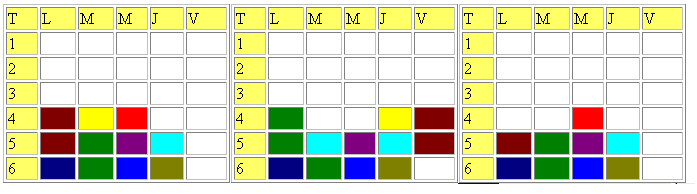
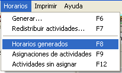
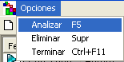
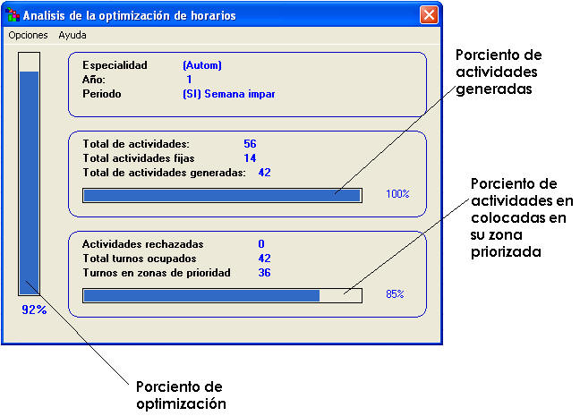

|
Análisis de horarios |
Los análisis de horarios son de mucha utilidad cuando se desea saber que tan óptimo es un horario. Es importante conocer que, no por el hecho que el sistema pueda evaluar un horario determinado sea capaz de mejorarlo. El análisis que se hace es el resultado que pudo obtener el generador. Los parámetros que se utilizan para dar este análisis son:
Total de actividades: Es la suma de todas las actividades que se posee un horario en específico, en conjunto con todas las brigadas.
Ejemplo:
Supongamos que tenemos el siguiente desglose de actividades para una Especialidad, Año y Período:
| Asignatura | 1 | 2 | 3 |
| Matemática | Conf | Cp | Cp |
| Física | Conf | Cp | |
| Química | Conf | Cp | |
| Computación | Conf | Cp | |
| Historia | Conf |
como se puede observar existen 10 actividades en este desglose. Si suponemos que las brigadas que deben realizar estas actividades son 7, entonces el Total de actividades será:
7 brigadas x 10 actividades/período = 70 actividades.
Total de actividades fijas: De la misma forma que el total de actividades, el total de actividades fijas solo cuenta las que el usuario haya fijado previamente a la generación. Si luego de generar, el usuario fija alguna otra actividad, e sistema aumentará este total, pero disminuirá el Total de actividades generadas, para mantener el mismo porcentaje.
Total de actividades generadas: Son todas las actividades que en el momento de generación el sistema pudo colocar. Para que el resultado sea un 100% este total debe ser igual a la diferencia entre el Total de actividades y el Total de actividades fijas.
Actividades rechazadas: Son todas las actividades que en el momento de generación el sistema no pudo colocar. Estas se pueden visualizar en la opción Actividades sin asignar del menú Horarios.
Total de turnos ocupados: Es el conjunto de todos los turnos ocupados por todas las brigadas en el Período y de la Especialidad y Año en cuestión.
Supongamos que tenemos los siguientes 3 horarios:

El primero tiene 11 turnos ocupados, el segundo 12 turnos ocupados, y el tercero 9, para un total de 32 turnos ocupados.
Turnos en zonas de prioridad: Son aquellos turnos del Total de turnos ocupados, que están en su zona priorizada según su clasificación de actividad .
¿Cómo mostrar un análisis de horarios?


4. Aparecerá la siguiente ventana:
